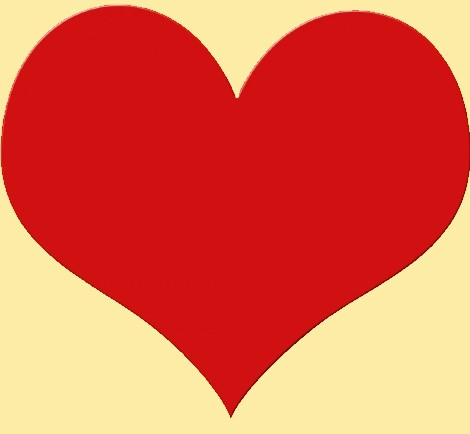

Omia ikuistettuja onnettomuuksiani:
Ratsastusta pidetään maailman vaarallisimpana kesäolympialajina, onnettomuuksia sattuu paljon, etenkin kenttäratsastuksessa. Kenttäratsastuksessa pahimmat onnettomuudet tapahtuvat tyypillisesti niin sanotuissa ”rotational fall” tapauksissa. Tällöin hevonen kompastuu maastoesteeseen ja tulee kaatuessaan ratsastajan niskaan. Näissä tilanteissa on myös vauhtia ja voimaa, tällöin fysiikan lait ovat armottomat. Kenttäratsastuksessa on tehty viime vuosina merkittäviä parannuksia turvallisuuden vuoksi, mutta kaikkia onnettomuuksia ei voida estää. Onnettomuuksia ja kuolemantapauksia tapahtuu myös muutenkin, kuin pelkästään kenttäratsastuksen maastoesteosuuksilla, mutta suurimmat riskit ovat kuitenkin maastoesteillä. Yllä olevan karusellin kolmannen kuvan minusta on ottanut nainen, joka kuoli alle 20 vuotiaana pudotessaan hevosen selästä. Jätän nimen mainitsematta tässä tapauksessa.
Seuraava teksti on lainattua Ylen artikkelista: ”Kenttäratsastus tunnetaan yhtenä maailman vaarallisimmista urheilulajeista. Vaaralliseksi sen tekee maastokoe. Arvokisoissa ratsukko etenee maastossa reipasta laukkaa (590 metriä minuutissa) ja eteen tulee yhteensä noin 45 erilaista estettä. Esteet voivat olla puunrunkoja, vallihautoja, vesihautoja tai lähes mitä vaan. Esteet ovat kuitenkin kiinteitä, eli ne eivät putoa kavioiden kosketuksesta, kuten rataestekilpailun puomit. Hevonen voi kompastua esteeseen ja kaatua ratsastajan päälle. Hevonen painaa noin 600 kiloa. Kenttäratsastus vaati vuosien 1997 ja 2008 välillä lähes 40 kuolonuhria ympäri maailman. Ratsastus on extreme-laji. Suomessa on noin 170 000 ratsastuksen harrastajaa. Vain harva pääsee hyppäämään esteitä luonnossa, mutta jokainen hevosen selkään nouseva tietää, että riskit ovat olemassa, kun alla on eläin eikä kone. Hevonen on saaliseläin, joka pakenee säikähtäessään ja nousee sekunnin sadasosassa jaloilleen, jos sattuu kaatumaan. Silloin on tietysti hengenvaarallista maata eläimen jaloissa. Oli sitten maneesissa tai maastossa.” Lähde:YLE.
Alla olevaa punaista nappia painamalla löydät YouTube videon, johon on koostettu erilaisia ratsastustapaturmia, videon katsominen voi järkyttää herkempiä katsojia. Ratsastus ei ole kuitenkaan pelkkiä onnettomuuksia ja tapaturmia, se voi olla myös parhaimmillaan näin kaunista ratsastajan ja hevosen välistä yhteistyötä, kuin mitä näet vihreää nappia painamalla.
Vaarallista KaunistaJoskus olen kuullut sellaisen hassun väitteen, että ratsastus ei ole urheilua, kun ihminen vain istuu siellä.. No sellaista hyvän ratsastuksen kuuluukin olla, täysin eleetöntä. Haluan vielä linkata tämän videon, joka kannattaa kuunnella äänet päällä viimeistään jostain puolesta välistä eteenpäin. Ei kuulosta ihan kevyeltä touhulta. Kyseessä kenttäratsastuksen SM-voittajan kypäräkameravideo Ypäjältä vuonna 2017. Ihanasti ratsastaja myös tsemppaa hevostaan koko radan ajan 